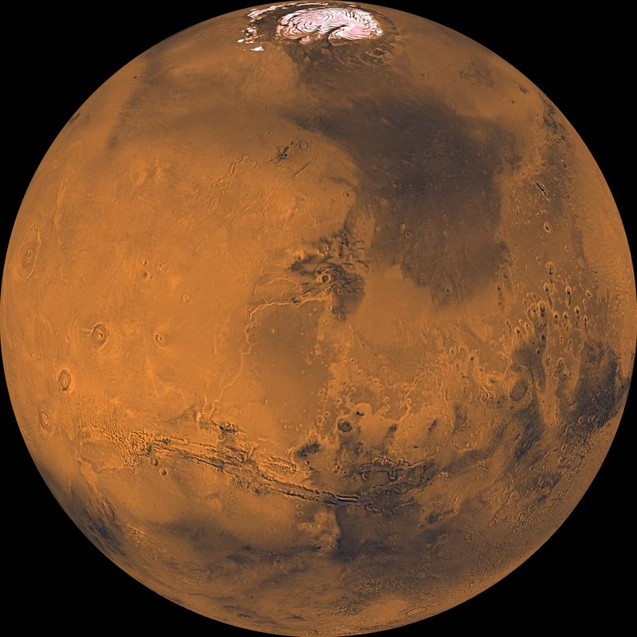

Planeta rochoso · 4.º a partir do Sol
Marte, o planeta vermelho

Porque é vermelho?
A superfície de Marte está coberta de poeira rica em óxido de ferro, o mesmo composto que forma a ferrugem. É essa poeira que dá ao planeta a sua cor avermelhada característica.
O maior vulcão
O Olympus Mons tem cerca de 22 km de altura — quase três vezes a altura do Monte Evereste. A sua base é tão larga que cobriria grande parte de Portugal continental.
Missões a Marte
Vários robôs já exploraram a superfície marciana. O rover Perseverance procura sinais de vida antiga, e o pequeno helicóptero Ingenuity foi o primeiro aparelho a voar noutro planeta.
A Agência Espacial Europeia também tem um programa dedicado: ExoMars.